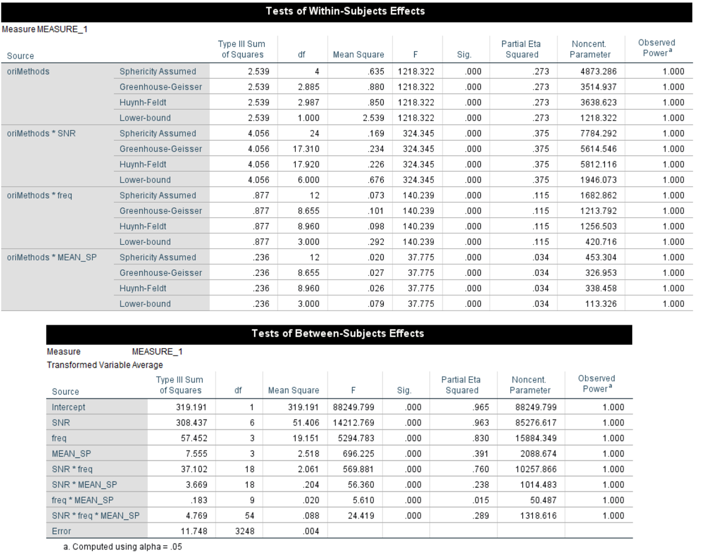
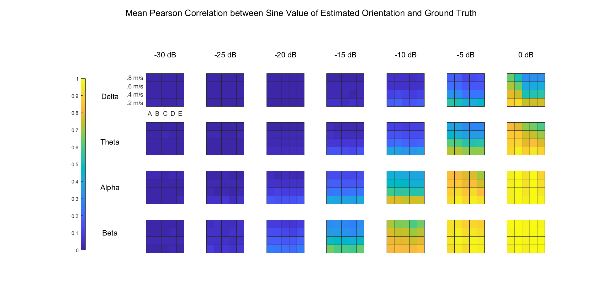
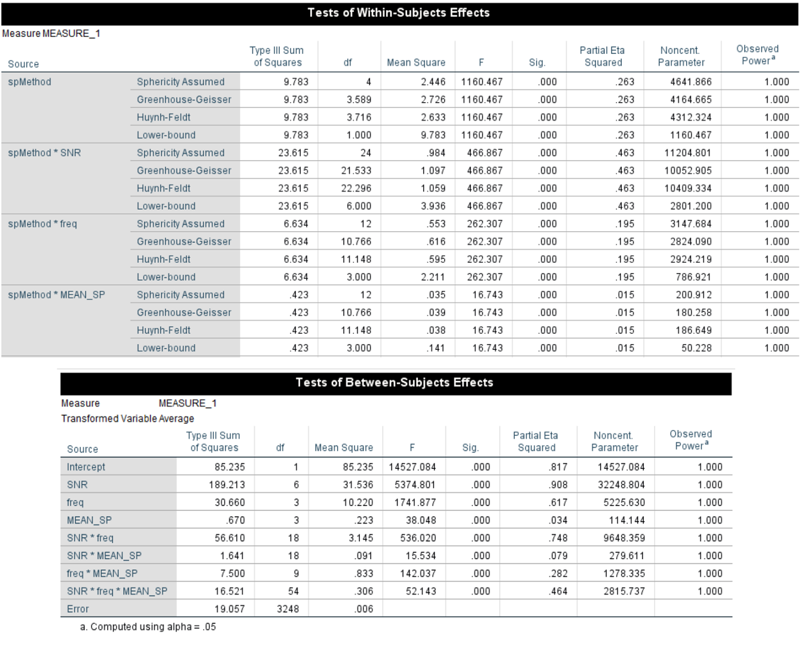

Evaluating the Performance of Linear Regression on the Detection of Cortical Traveling Waves
Introduction
With the guidance of Prof. Sven Bestmann, I analyzed the performance of linear regression on the detection of mesocopic cortical traveling waves of different speeds, in different frequency bands under different levels of Signal-to-Noise-Ratio (SNR), with more than 300,000 trials in total. It turned out that the estimation of orientation improved as SNR and spatial frequency increased, but there might be an optimal spatial frequency interval for the estimation of speed. Besides, performing a single regression at each time point would be generally better than over the whole trial, and estimating by the median of speed distribution would be more accurate than the mean.
(Here we only show part of the results.)
Results
Orientation
We performed a 4-way ANOVA on our data (between-group factors: 7 SNR * 4 Frequency band * 4 TW speed, within-group factor: 5 OriMethods) in SPSS 26. Since there were a huge number of simulations, and 400 trials in each simulation, it's not surprising that every term turned out to have a significant effect:

Output from SPSS 26. Note that we only show part of the within-group effects, but the p-values not shown were just another list of .000
The results can be summarized into the figure below, which shows the mean correlation in each combination of factors:

Color indicates the mean value of Pearson correlation coefficient between the sine value of estimated and real orientations in each condition over 30 simulations. Labels on the X and Y axes indicate the SNR and frequency band in each subplot respectively. Labels on the x and y axes of each subplot indicate the detection method and mean TW speed respectively.
It's clear that the slower the TW, the higher the temporal frequency, the higher the SNR, the better the detection, and all algorithms performed equally well except that regression over samples (method A and B) would be better with high SNR.
Speed

Output from SPSS 26. Note that we only show part of the within-group effects, but the p-values not shown were just another list of .000
The result was summarized below:

Color indicates the mean value of Pearson correlation coefficient between the estimated and real speeds in each condition over 30 simulations. Meaning of the labels are the same as Figure 2.
Discussion
Spatial frequency and orientation estimation
Generally speaking, the estimation of orientation would be better for higher SNR, higher temporal frequency and lower speed, and the latter two probably both reflect the effect of spatial frequency, which is the ratio between temporal frequency and speed. With higher spatial frequency, the phase gradient will be larger, thus more robust against the perturbation of noise.
Besides, we also expect that different frequency band may have different SNR, especially alpha band, whose power is much higher than a standard pink noise. But it seems that we didn't found alpha more detectable, probably because the extra SNR in alpha band was insignificant compared to the low overall SNR we used, and was less influential than the difference in spatial frequency.
Influence of mean speed on its estimation
Surprisingly, the effect of mean speed on its estimation is inconsistent across frequency bands. The fact that for lower frequency bands the estimation was more accurate with lower speed and for higher bands the higher speed may indicate that the speed can be optimally estimated when the ratio between temporal frequency and speed, i.e. spatial frequency, is within a certain interval. For example, it could be around 12.5 (delta, alpha) to 30 cycle/m (theta, beta) in our experiment with 0dB SNR.
Besides, the estimation of speed is more heavily dependent on the proper unwrapping of phases. For example, adding an extra to the phase differences of every adjacent electrode pairs will not change the estimation of TW direction, but will lead to a significant overestimation in speed. Therefore, we may need to make better use of global information during the phase unwrapping process, or use circular-linear regression instead.
Overall performance
The overall estimation precision in our experiment was relatively poor. It may be partly explained by the sparse arrangement of our electrode array (with a electrode pitch of 3mm, and only 11 * 11 electrodes). Probably using a larger and denser array will help (e.g., the Utah array has a electrode pitch of 0.4mm). Besides, intracranial recording has much higher SNR. If it can be as high as -10dB, the estimation will still be acceptable, at least for orientation.
Besides, the current results are all based on Pearson correlation, which is not optimal for quantifying exact matching between estimation and ground truth, so the performance will be probably even worse if we use some metrics for exact similarity.
Limitations
Currently, there are two main limitations in our experiment:
- We mainpulated the analytic signals in each band to generate TW, which means the phase lag will be consistent across all frequencies in this band, thus making time lag inconsistent. Besides, in order to prevent problems caused by digital sampling, we constraint TW signals to the Fourier frequencies, which is not so reasonable.
- We used correlation coefficient rather than metrics for exact matching to evaluate the performance.
Methods
Experiment design
Basically, our experiment contains two 4-way ANOVAs (7 SNRs * 4 Wave Speeds * 4 Frequency Bands * 5 Methods) over the similarity between estimated and real orientation or speed (respectively) of the traveling waves (TWs).
There are n = 30 simulations for each combination of SNR and wave speed, and each simulation contains 400 trials of 4 seconds. In each trial and each frequency band, a TW sweeps across a 11 * 11 (3cm * 3cm) electrode array with consistent orientation and speed, but the orientation and speed vary over trials following a Von-Mises / Gaussian distribution. For orientation, the mean of the Von-Mises distribution is chosen randomly for each simulation and each band, but the standard deviation is always pi / 6. For speed, the mean is a fixed factor that we want to explore, and the standard deviation is 1/10 of the mean.
Response variables
The response variables are the similarity between estimations and ground-truth over all trials in a simulation. The similarity can be defined in many ways, but currently we only used two of them for analysis:
- For orientation: Pearson correlation of sine values
- For speed: Pearson correlation
Actually, both quantifies correlation rather than exact similarity between estimation and ground-truth. So we may repeat the analysis with the following metrics soon:
- For orientation: Mean cosine value of the phase differences
- For speed: ratio between the root of mean-square-error and the real mean speed
Independent variables
Frequency band (between-group): delta (1-4 Hz), theta (4-8 Hz), alpha (8-12 Hz), beta (12-25 Hz)
- Although signals in different bands were added up together in one simulation, they were manipulated and analyzed independently
SNR (between-group): -30dB, -25dB, -20dB, -15dB, -10dB, -5dB, 0dB
- Typical per-trial SNR levels for MEG data range from −40 to −20 dB (Goldenholz et al., 2009)
Mean TW speed (between-group): 0.2m/s, 0.4m/s, 0.6m/s, 0.8m/s
- The spatial Nyquist frequency corresponds to about 0.11m/s for beta band (central frequency = 18.5 Hz)
- The speed of mesoscopic brain waves usually range from 0.1 to 0.8 m/s (Muller et. al., 2018)
Method (within-group): 5 for both orientation and speed (see below)
Estimation of orientation and speed
Before estimation, the observed instant phase distribution was unwrapped and locked to one the channels. The phase unwrapping began with the top-left electrode and followed a column-first style, during which the phase of one electrode would be shifted by so as to make it as close to the phase of the "previous" (for electrodes in the top row, the one on their left; otherwise the one in the row above) electrode as possible, which was done by subtracting from . Then the phase of the electrode at the center was subtracted from the data so as to remove the systematic difference between time points.
For estimation, essentially all methods fit the observed instant phase distribution by , then estimate the orientation and speed by and respectively (where is the central frequency in each band). However, we can perform the regression at different time scales:
Calculate kx, ky, kc and instant orientation & speed for each timepoint, then calculate the center orientation & speed
For orientation:
- average the complex angles
- average the complex angles, but weighted by some statistics, e.g. R squared of each regression
For speed:
- mean
- median (since speed is non-negative, its distribution turned out to have a heavy tail on the right)
Use all timepoints in a trial for regression and calculate a single set of kx, ky, kc, then orientation & speed
Calculate kx, ky, kc, orientation & speed in each cycle (of each frequency band), then extract the mean or median from the distribution, which is a combination of the two methods above
So there are 5 methods for the estimation of orientation and speed:
For orientation:
- Regression over samples, unweighted (
mSmpOri) - Regression over samples, weighted (
wmSmpOri) - Regression over cycles, unweighted (
mCyOri) - Regression over cycles, weighted (
wmCyOri) - Regression over the whole trial (
trOri)
- Regression over samples, unweighted (
For speed:
- Regression over samples, mean (
mSmpSp) - Regression over samples, median (
medSmpSp) - Regression over cycles, mean (
mCySp) - Regression over cycles, median (
medCySp) - Regression over the whole trial (
trSp)
- Regression over samples, mean (